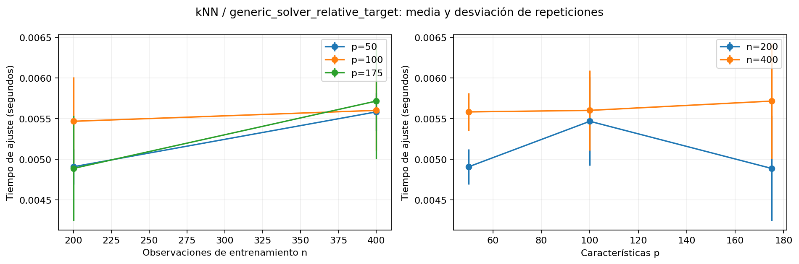

Datos de desarrollo únicamente. El conjunto diagnóstico final se excluye del ajuste. Las mediciones incluyen instrumentación de memoria y no equivalen a latencia de producción sin instrumentación.

| model | variant | train_rows | features | fit_wall_seconds_mean | fit_wall_seconds_std | predict_wall_seconds_mean | predict_wall_seconds_std | predict_seconds_per_row_mean | predict_seconds_per_row_std | fit_python_traced_peak_bytes_mean | fit_python_traced_peak_bytes_std | fit_sampled_rss_peak_bytes_mean | fit_sampled_rss_peak_bytes_std | fit_sampled_rss_increment_bytes_mean | fit_sampled_rss_increment_bytes_std | predict_python_traced_peak_bytes_mean | predict_python_traced_peak_bytes_std | predict_sampled_rss_peak_bytes_mean | predict_sampled_rss_peak_bytes_std | predict_sampled_rss_increment_bytes_mean | predict_sampled_rss_increment_bytes_std | diagnostic_rmse_mean | diagnostic_rmse_std | diagnostic_mae_mean | diagnostic_mae_std |
|---|---|---|---|---|---|---|---|---|---|---|---|---|---|---|---|---|---|---|---|---|---|---|---|---|---|
| kNN | generic_solver_relative_target | 200 | 50 | 0.004910 | 0.000218 | 0.002664 | 0.000146 | 0.000083 | 0.000005 | 240736.000000 | 166.469216 | 2.373018e+08 | 4096.000000 | 17749.333333 | 2364.826703 | 48449.000000 | 16.370706 | 2.373031e+08 | 2364.826703 | 1365.333333 | 2364.826703 | 0.110987 | 0.0 | 0.074923 | 0.0 |
| kNN | generic_solver_relative_target | 200 | 100 | 0.005468 | 0.000543 | 0.002681 | 0.000116 | 0.000084 | 0.000004 | 333232.000000 | 0.000000 | 2.373318e+08 | 2364.826703 | 17749.333333 | 2364.826703 | 61228.000000 | 81.406388 | 2.373332e+08 | 2364.826703 | 1365.333333 | 2364.826703 | 0.087338 | 0.0 | 0.065557 | 0.0 |
| kNN | generic_solver_relative_target | 200 | 175 | 0.004889 | 0.000646 | 0.002690 | 0.000229 | 0.000084 | 0.000007 | 472132.000000 | 0.000000 | 2.374383e+08 | 2364.826703 | 19114.666667 | 2364.826703 | 93653.666667 | 40.377386 | 2.374397e+08 | 2364.826703 | 1365.333333 | 2364.826703 | 0.087878 | 0.0 | 0.067314 | 0.0 |
| kNN | generic_solver_relative_target | 400 | 50 | 0.005584 | 0.000233 | 0.003115 | 0.000288 | 0.000097 | 0.000009 | 330660.000000 | 0.000000 | 2.373222e+08 | 17854.050073 | 27306.666667 | 15507.205723 | 48348.333333 | 75.055535 | 2.373236e+08 | 18918.613621 | 1365.333333 | 2364.826703 | 0.107244 | 0.0 | 0.084302 | 0.0 |
| kNN | generic_solver_relative_target | 400 | 100 | 0.005602 | 0.000490 | 0.002893 | 0.000185 | 0.000090 | 0.000006 | 513358.666667 | 170.895680 | 2.374110e+08 | 37837.227242 | 28672.000000 | 21283.440323 | 61199.000000 | 62.353829 | 2.374328e+08 | 0.000000 | 21845.333333 | 37837.227242 | 0.087120 | 0.0 | 0.068600 | 0.0 |
| kNN | generic_solver_relative_target | 400 | 175 | 0.005716 | 0.000707 | 0.002930 | 0.000337 | 0.000092 | 0.000011 | 787142.000000 | 31.176915 | 2.379926e+08 | 37837.227242 | 210261.333333 | 332264.463470 | 93760.666667 | 202.072594 | 2.379926e+08 | 37837.227242 | 0.000000 | 0.000000 | 0.082664 | 0.0 | 0.063744 | 0.0 |
| varying | fixed | fixed_value | fit_log_log_slope | distinct_sizes | interpretation |
|---|---|---|---|---|---|
| train_rows | features | 50 | 0.185588 | 2 | descriptive small-grid exponent; overhead and solver iterations may dominate |
| train_rows | features | 100 | 0.034935 | 2 | descriptive small-grid exponent; overhead and solver iterations may dominate |
| train_rows | features | 175 | 0.225465 | 2 | descriptive small-grid exponent; overhead and solver iterations may dominate |
| features | train_rows | 200 | 0.002922 | 3 | descriptive small-grid exponent; overhead and solver iterations may dominate |
| features | train_rows | 400 | 0.018221 | 3 | descriptive small-grid exponent; overhead and solver iterations may dominate |
Un exponente medido con pocos tamaños no demuestra una complejidad asintótica. Los tiempos incluyen escalado, asignaciones, llamadas de biblioteca e iteraciones dependientes de datos; comparar con la expresión del solver y los parámetros realmente usados.
| model | training | inference | memory | condition |
|---|---|---|---|---|
| KNN | O(n p) copy/storage for brute-force search | O(m n p + m n log k) conservative brute-force distance/neighbor selection | O(n p + n q) | Euclidean brute-force; argpartition can reduce neighbor selection cost |
| Ridge | O(n p² + p³ + n p q) using dense normal equations/Cholesky, n >= p | O(m p q) | O(n p + p² + p q) | Solver-dependent; iterative lsqr instead costs O(I n p q), SVD has a different factorization cost |
| Lasso | O(I n p q) coordinate-descent sweeps | O(m p q) | O(n p + p q) | I is actual sweeps to convergence; conditioning, alpha and tolerance affect I |
| DecisionTree | O(p n log n) balanced-tree heuristic; O(p n²) degenerate worst case | O(m d q) | O(n q) nodes plus training workspace | Split implementation and max_features modify p; q output work is implementation-dependent |
| RandomForest | O(T p n log n) balanced trees, plus multioutput split work | O(m T d q) | O(T n q) | T trees; bounded depth/sampled rows and p_split <= p change constants; parallel wall time is hardware-dependent |
| XGBoost | O(q T [n p d + 2^d p B]) rough histogram-growth bound | O(m q T d) | O(n p + p B 2^d + q T 2^d) | One regressor per output, histogram bins B; conservative row scans per depth. Cached quantization, histogram subtraction, sampling and early stopping change actual cost |
| LinearSVR | O(q I n p) linear primal/dual iteration heuristic | O(m p q) | O(n p + p q) | Liblinear iteration counts are data-dependent; this bound is not for kernel SVR |
| HAR-Ridge+XGBoost | O(n p_H² + p_H³ + n p_H q) + XGBoost training cost on p_X | O(m p_H q + m q T d) | Ridge workspace + XGBoost workspace/model | p_H HAR inputs and p_X tree inputs; weighted prediction adds O(m q); serial component fits are summed |
n: training observations; p: input columns; q: outputs (seven here); m: inference rows; T: trees; d: tree depth; I: solver iterations; k: neighbors; B: histogram bins
Las mediciones usan datos de desarrollo; no seleccionan modelos ni parámetros con el holdout.
El RMSE de este benchmark no sustituye las métricas externas de validación anidada.
RSS corresponde al proceso actual, incluye bibliotecas y memoria retenida; el incremento respecto al inicio no es el tamaño del modelo.
El pico RSS es muestreado y puede perder asignaciones breves; procesos trabajadores no se incluyen. Preferir n_jobs=1 en estas comparaciones.
tracemalloc cuenta asignaciones trazadas y omite parte de la memoria nativa. Su instrumentación añade costo y se aplica igual a cada variante.
Los prefijos de columnas solo examinan escalamiento computacional y no son una búsqueda validada de características.
Referencias: scikit-learn computational performance | scikit-learn nearest-neighbor algorithms | XGBoost tree methods